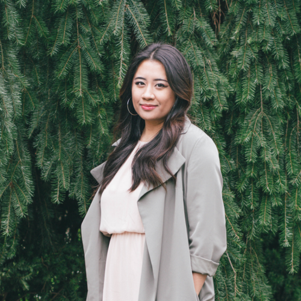

about me

I am a seasoned designer who seamlessly combines curiosity with empathy in my professional and personal endeavors. Having 4+ years of industry experience under my belt I have dabbled in various facets of design, including: graphic/digital, web, video, motion, and a bit of social media and development.
Currently I am pursuing further education in web development to boost my skillset in design for tech. My goal is to comprehensively understand the integrated process between designing and programming to improve my production quality and approach to the tech industry.
Outside of professional matters, you can find me exploring the Seattle food scene, or regularly discovering new music. Feel free to get in touch!